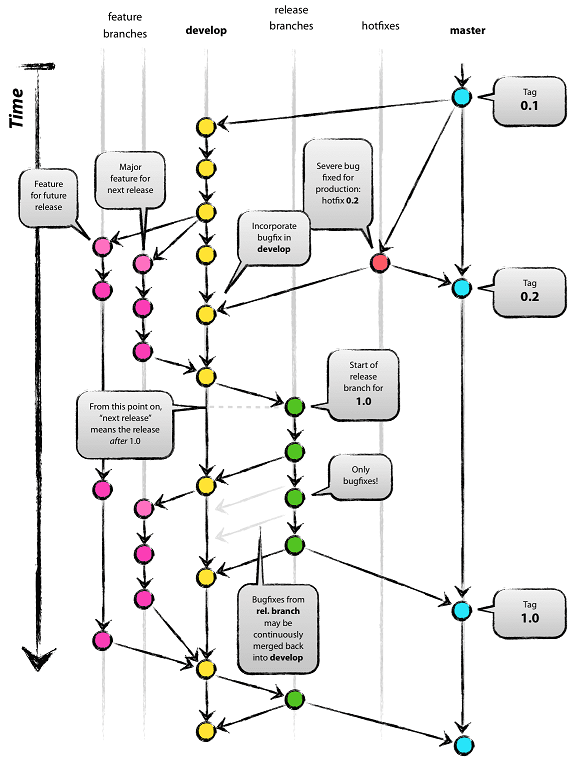
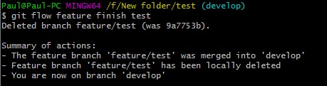

POSTS
Git Flow Tutorial
Git flow
Branching model
There will be these pre-defined branches:
- master: stores the official release history
- develop: an integration branch for features
- feature branches
- release branches
- hotfix branches: hotfix for master
Basic concept:
- A develop branch is created from master
- A release branch is created from develop
- Feature branches are created from develop
- When a feature is complete it is merged into the develop branch
- When the release branch is done it is merged into develop and master
- If an issue in master is detected a hotfix branch is created from master
- Once the hotfix is complete it is merged to both develop and master

Basic commands

cd your-git-repositoty-root-directory
git flow init # Initialize gitflow
git flow feature start f1 # start a new feature
git flow feature finish f1 # finish it, will merge into develop branch, and delete itself
git flow feature publish f1 # push to remote
git flow release start r1 # start a new release
git flow release finish r1 # finish it, will merget both into develop and master, rember add tag
git flow release publish r1 # push to remote
git flow hotfix start h1 # start hotfix from master
git flow hotfix finish h1 # finish it, will merget both into develop and master
git flow hotfix publish h1 # push to remote
Note
- You should install the git-flow locally, and run the git flow init -d in the repository to enable it.
- When have merge confict issue when finish feature, you should uncomment the merge message to complete the merging. A typical feature finish result

Referrence
- https://danielkummer.github.io/git-flow-cheatsheet/
- https://www.atlassian.com/git/tutorials/comparing-workflows/gitflow-workflow
- https://github.com/nvie/gitflow